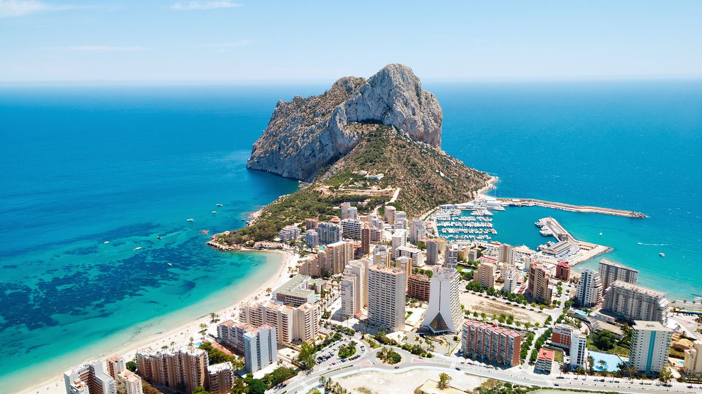
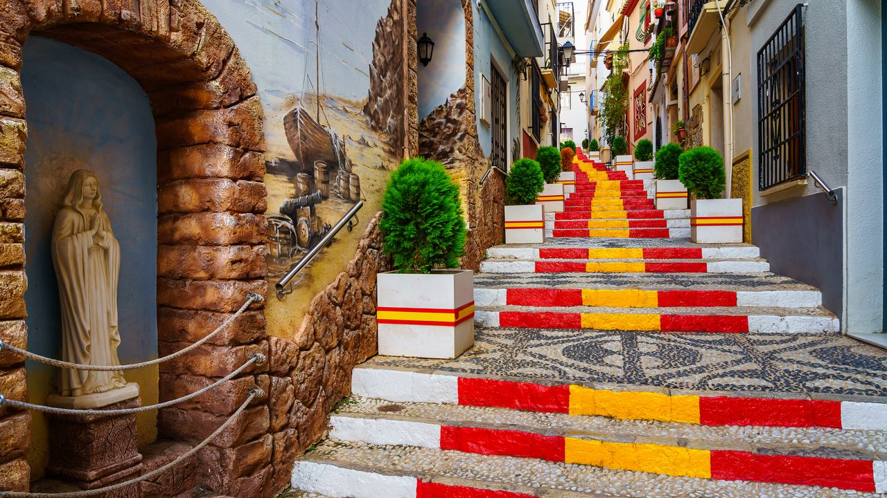
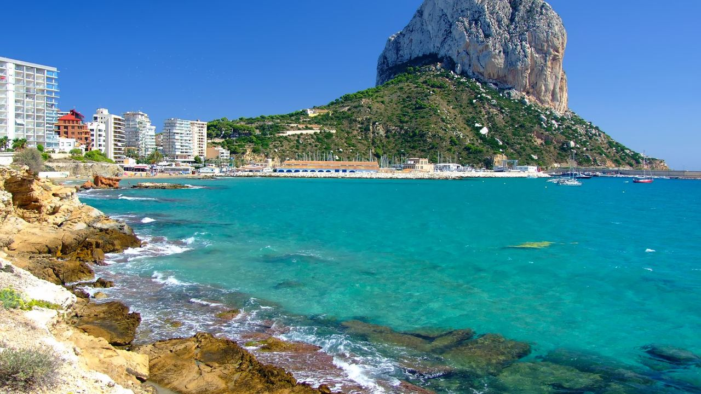
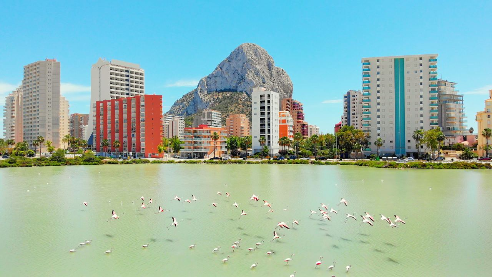
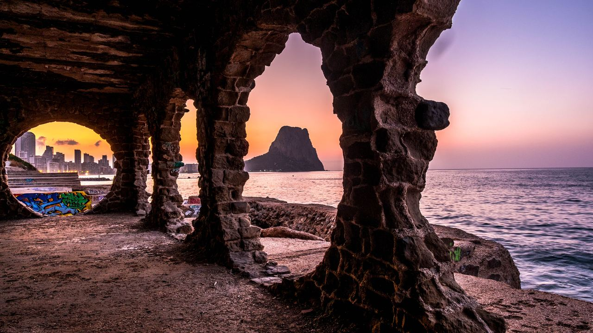

Lugares · Costa Blanca
Calpe en la Costa Blanca – Estilo de vida, precios y quién compra aquí

En resumen: Calpe es una localidad animada pero tranquila a los pies del Peñón de Ifach, con dos grandes playas, puerto pesquero y una gran comunidad internacional. En septiembre de 2026 el precio medio de oferta rondaba los 3.600 € por m² (idealista), un 13 % más que un año antes, y en la zona de Arenal-Bol supera con creces los 5.000 €. Lo más buscado son los apartamentos en primera línea, los áticos con terraza y las villas con vistas al mar.
Calpe está entre la montaña y el Mediterráneo, presidida por los 332 metros del Peñón de Ifach, símbolo de la Costa Blanca. Mezcla el carácter de un antiguo pueblo pesquero con todos los servicios para vivir todo el año. Así es la vida aquí, esto cuestan las viviendas en 2026 y estas son las zonas.
La vida en Calpe

El día a día gira en torno al mar. Café por la mañana en el paseo y, a media tarde, los barcos vuelven a puerto y el pescado se subasta en la lonja, que se puede ver desde una galería para el público. Los restaurantes del puerto lo sirven esa misma noche.
Para la naturaleza, se puede subir al Peñón de Ifach dentro del parque natural (en temporada alta con reserva gratuita en línea), pasear por Las Salinas, donde se alimentan los flamencos, o bañarse en las calas del norte. El casco antiguo, con escaleras pintadas y plazas pequeñas, acoge mercados y fiestas como los Moros y Cristianos de octubre.
En verano hay mucho ambiente, pero menos que en la cercana Benidorm, y la localidad tiene vida todo el año con comercios, centros de salud, colegios y muchos residentes extranjeros.
Precios de la vivienda en 2026
Según idealista, el precio medio de oferta en Calpe en septiembre de 2026 fue de unos 3.600 € por m², alrededor de un 13 % más que un año antes. Los pisos rondaban los 4.000 € por m² y las casas y chalés unos 3.250 €.
- Playa Arenal-Bol (playa del centro): la zona más cara, unos 5.500 € por m².
- Calpe Pueblo (casco antiguo): unos 3.100 € por m².
- Urbanizaciones de chalés en ladera, como Oltamar y Cucarres: desde unos 2.800 € por m².
Como orientación, un piso de dos dormitorios cerca de la playa cuesta 300.000–500.000 €, un apartamento o ático con vistas 450.000–700.000 € y una villa moderna desde unos 800.000 € hasta varios millones.
¿Quién compra en Calpe?
Calpe es de las localidades más internacionales de la Costa Blanca. Compran sobre todo holandeses, belgas, alemanes, escandinavos y británicos, además de muchas familias de Madrid y Valencia con segunda residencia.
- Propietarios de segunda vivienda que buscan una playa con vida todo el año.
- Jubilados que valoran el paseo llano y tener todo a mano.
- Teletrabajadores atraídos por el clima y la buena conexión.
- Inversores en alquiler vacacional, aunque las normas se han endurecido (ver abajo).
Zonas y playas

- Arenal-Bol: la playa principal, en el centro, con un paseo lleno de cafeterías y restaurantes. Sobre todo apartamentos.
- La Fossa (Levante): larga playa de arena a los pies del Peñón, con torres de apartamentos con vistas.
- Casco antiguo y Las Salinas: vida local, comercios y promociones nuevas junto a la laguna.
- Maryvilla, Empedrola, Canuta y Gran Sol: urbanizaciones de chalés con vistas al mar, más tranquilas pero con cuestas; conviene tener coche.
Comprar para alquilar: lo que hay que saber
Desde 2024 la Comunitat Valenciana ha endurecido las normas del alquiler turístico. Cada vivienda turística necesita número de registro, los ayuntamientos pueden limitarlas por zonas y, en un edificio, la comunidad de propietarios puede restringir o prohibir nuevas. Antes de comprar para alquilar, revise la zonificación municipal, los estatutos del edificio y si el piso ya tiene licencia en vigor. Lo explicamos en las nuevas normas del alquiler de corta duración.
El futuro de Calpe

El ayuntamiento invierte en espacios públicos, como la renovación del paseo de La Fossa, y actualiza su plan urbanístico para controlar el crecimiento. Siguen saliendo viviendas nuevas, sobre todo en torno a Las Salinas y en las urbanizaciones de ladera. El poco suelo disponible entre el mar, el Peñón y la montaña sostiene los precios a largo plazo.
Preguntas frecuentes
¿Cuánto cuesta una vivienda en Calpe?
En septiembre de 2026 el precio medio de oferta era de unos 3.600 € por m². Un piso de dos dormitorios cerca de la playa suele costar 300.000–500.000 € y una villa moderna desde unos 800.000 €.
¿Se puede vivir en Calpe todo el año?
Sí. Tiene comercios, centros de salud, colegios, puerto pesquero y una gran comunidad internacional, y en invierno sigue teniendo vida.
¿Cuál es la zona más cara de Calpe?
La de la playa Arenal-Bol, en el centro, con unos 5.500 € por m².
¿Puedo alquilar mi piso en Calpe a turistas?
Quizá, pero necesita registro turístico y que lo permitan la zonificación municipal y las normas del edificio. Compruébelo antes de comprar.
Encuentre su sitio en Calpe

Calpe ofrece una mezcla poco común: un pueblo de verdad, playas preciosas y naturaleza espectacular a la puerta de casa. Si quiere ver qué hay disponible, contacte con nosotros. Y antes de empezar, nuestra guía cómo comprar una vivienda en España explica cada paso.
Fuentes: idealista – property valuation in Calpe (September 2026) · Generalitat Valenciana – Penyal d'Ifac Natural Park